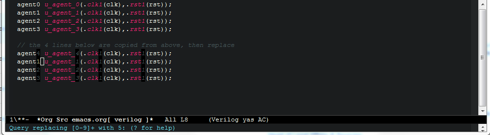
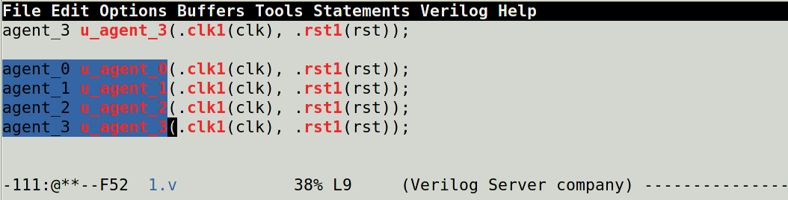
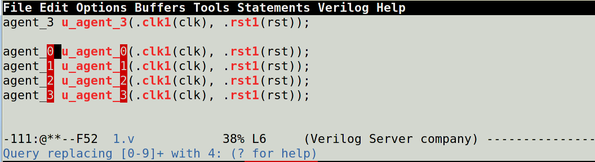

Emacs column edit
以前一直觉得emacs的列操作不如vim好用，经过最近一段时间的深入使用，让我的看法有所改变。比如下面的代码我想多加4组agent，那么怎么做呢？
agent0 u_agent_0(.clk1(clk),.rst1(rst));
agent1 u_agent_1(.clk1(clk),.rst1(rst));
agent2 u_agent_2(.clk1(clk),.rst1(rst));
agent3 u_agent_3(.clk1(clk),.rst1(rst));
先copy四行出来。
agent0 u_agent_0(.clk1(clk),.rst1(rst));
agent1 u_agent_1(.clk1(clk),.rst1(rst));
agent2 u_agent_2(.clk1(clk),.rst1(rst));
agent3 u_agent_3(.clk1(clk),.rst1(rst));
// the 4 lines below are copied from above
agent0 u_agent_0(.clk1(clk),.rst1(rst));
agent1 u_agent_1(.clk1(clk),.rst1(rst));
agent2 u_agent_2(.clk1(clk),.rst1(rst));
agent3 u_agent_3(.clk1(clk),.rst1(rst));
然后，先选中要修改的4行，然后M-C-%(或者M-x，键入query-replace-regexp, 回车)，在mini-buffer中输入被替换的表达式是
[0-9]+
目标表达式是
\, (+ 4 \#&)
然后回车，就有一个交互式提示，想要替换掉的，按y，不想替换的按n，如果想全部替换的话，按！,具体命令可以按？来查询。 如图所示。
经过4轮的"yynn"后就得到了下面的代码。
agent0 u_agent_0(.clk1(clk),.rst1(rst));
agent1 u_agent_1(.clk1(clk),.rst1(rst));
agent2 u_agent_2(.clk1(clk),.rst1(rst));
agent3 u_agent_3(.clk1(clk),.rst1(rst));
// the 4 lines below are copied from above, then replace
agent4 u_agent_4(.clk1(clk),.rst1(rst));
agent5 u_agent_5(.clk1(clk),.rst1(rst));
agent6 u_agent_6(.clk1(clk),.rst1(rst));
agent7 u_agent_7(.clk1(clk),.rst1(rst));
这个过程略显复杂，如果是emacs版本25.2的话，就可以使用(rectangle-mark-mode)来单独选中要改变的列，然后整体替换就ok了。 如下图所示。

Comments